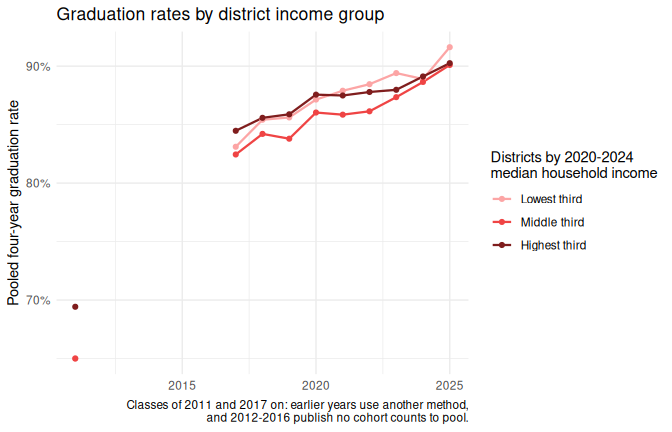

This article puts two datasets side by side: school district graduation rates from the state, and household income from the U.S. Census. It shows the steps any such analysis needs: pick the datasets, confirm they share a join key and years, pool rates from their counts, and respect breaks in a series.
Pick the datasets
gcd_search("high school graduation rate", n = 3) |> select(name, title, year_min, year_max)
#> ℹ Lookup tables that match: "schools" and "districts". See `gcd_dimension()`.
#> # A tibble: 3 × 4
#> name title year_min year_max
#> <chr> <chr> <int> <int>
#> 1 ccrpi_graduation_rate High School Graduation Rates 2012 2025
#> 2 graduation_rate_4_year_cohort Four-Year Cohort Graduation R… 2004 2025
#> 3 high_school_completers High School Completers 2011 2025
gcd_search("household income", level = "districts", n = 3) |> select(name, title, year_min, year_max)
#> ℹ Lookup tables that match: "block_groups". See `gcd_dimension()`.
#> # A tibble: 3 × 4
#> name title year_min year_max
#> <chr> <chr> <int> <int>
#> 1 median_household_income Median Household Income (ACS) 2020 2024
#> 2 median_income_by_nativity Median Individual Income by Place… 2020 2024
#> 3 direct_certification Direct Certification for Free Sch… 2014 2025graduation_rate_4_year_cohort is the four-year cohort
graduation rate published by the Governor’s Office of Education and
Workforce Strategy; median_household_income is the American
Community Survey (ACS) 5-year estimate. Before joining them, check that
they share a detail level and a key, and which years they cover:
grad_info <- gcd_describe("graduation_rate_4_year_cohort")
income_info <- gcd_describe("median_household_income")
intersect(grad_info$detail_levels, income_info$detail_levels)
#> [1] "districts" "states"
intersect(grad_info$grain, income_info$grain)
#> [1] "year" "district_code"
range(grad_info$years)
#> [1] 2004 2025
range(income_info$years)
#> [1] 2020 2024Both publish district rows keyed by district_code. The
ACS figures are 5-year estimates named by their end year, so the 2024
vintage pools survey responses from 2020 to 2024. We match it with the
graduating classes of 2020 to 2024.
The graduation schema also declares a series break, which matters for any trend:
grad_info$notes$series_breaks
#> # A tibble: 1 × 2
#> year reason
#> <int> <chr>
#> 1 2011 From 2011 Georgia reports the federal four-year adjusted-cohort graduat…Pool graduation rates from their counts
A district’s rate over several years is the sum of its graduates over
the sum of its cohorts, not the average of its yearly rates.
gcd_columns() names the numerator and denominator:
gcd_columns("graduation_rate_4_year_cohort") |>
filter(!is.na(metric_component)) |>
select(column, metric_component)
#> # A tibble: 2 × 2
#> column metric_component
#> <chr> <chr>
#> 1 num_graduates numerator
#> 2 num_cohort denominator
grad <- gcd_rows(
"graduation_rate_4_year_cohort",
detail = "districts",
demographic = "all",
district_type = "standard",
year = 2020:2024,
quiet = TRUE
)
pooled <- grad |>
filter(!is.na(num_graduates), !is.na(num_cohort)) |>
group_by(district_code, district_name) |>
summarise(
years = n(),
graduates = sum(num_graduates),
cohort = sum(num_cohort),
.groups = "drop"
) |>
mutate(graduation_rate = graduates / cohort)
pooled
#> # A tibble: 179 × 6
#> district_code district_name years graduates cohort graduation_rate
#> <chr> <chr> <int> <int> <int> <dbl>
#> 1 601 Appling County 5 1100 1197 0.919
#> 2 602 Atkinson County 5 520 549 0.947
#> 3 603 Bacon County 5 688 722 0.953
#> 4 604 Baker County 4 81 92 0.880
#> 5 605 Baldwin County 5 1199 1390 0.863
#> 6 606 Banks County 5 900 1017 0.885
#> 7 607 Barrow County 5 4294 4782 0.898
#> 8 608 Bartow County 5 4336 4618 0.939
#> 9 609 Ben Hill County 5 920 1088 0.846
#> 10 610 Berrien County 5 961 1093 0.879
#> # ℹ 169 more rowsdistrict_type = "standard" keeps the 180 city and county
districts, the only ones the Census publishes estimates for (charter and
state districts have no Census geography).
Pooling and averaging give different answers whenever districts differ in size. Here is 2024 for every kind of district, set against the published state row:
state_2024 <- gcd_rows("graduation_rate_4_year_cohort", detail = "states",
demographic = "all", year = 2024, quiet = TRUE)
districts_2024 <- gcd_rows("graduation_rate_4_year_cohort", detail = "districts",
demographic = "all", year = 2024, quiet = TRUE) |>
filter(!is.na(num_graduates), !is.na(num_cohort))
districts_2024 |>
summarise(
mean_of_district_rates = mean(graduation_rate),
pooled_from_counts = sum(num_graduates) / sum(num_cohort),
cohort_counted = sum(num_cohort)
) |>
mutate(published_state_rate = state_2024$graduation_rate,
published_state_cohort = state_2024$num_cohort) |>
as.data.frame()
#> mean_of_district_rates pooled_from_counts cohort_counted published_state_rate
#> 1 0.8942126 0.8668116 135695 0.8544
#> published_state_cohort
#> 1 137710
districts_2024 |>
group_by(district_type) |>
summarise(districts = n(), cohort = sum(num_cohort),
graduation_rate = sum(num_graduates) / sum(num_cohort))
#> # A tibble: 3 × 4
#> district_type districts cohort graduation_rate
#> <chr> <int> <int> <dbl>
#> 1 commission_charter 7 293 0.935
#> 2 standard 178 130073 0.890
#> 3 state_charter 6 5329 0.294Pooled from counts, the districts come within about a point of the published state rate. The cohort counted here is about 2,000 students short of the state’s, because some district rows have missing counts and drop out of the sums. The plain mean of district rates is further off, because it weighs a district of a few dozen students like one of thousands. The table by district type shows why the standard districts alone sit above the state rate: the state charter districts, with about 5,000 students in the cohort, graduate far fewer of them.
Join household income
income <- gcd_rows(
"median_household_income",
detail = "districts",
year = 2024,
race_iteration = "all",
quiet = TRUE
) |>
select(district_code, median_household_income, median_household_income_moe)
joined <- inner_join(pooled, income, by = "district_code")
nrow(joined)
#> [1] 179Medians can’t be pooled or averaged across districts, so income stays one value per district. The ACS reports a 90% margin of error beside each estimate; for small districts it can be a sizable share of the estimate:
joined |>
mutate(moe_share = median_household_income_moe / median_household_income) |>
summarise(median_moe_share = median(moe_share), max_moe_share = max(moe_share))
#> # A tibble: 1 × 2
#> median_moe_share max_moe_share
#> <dbl> <dbl>
#> 1 0.0935 0.475
ggplot(joined, aes(median_household_income, graduation_rate)) +
geom_point(aes(size = cohort), alpha = 0.5, colour = "#b91c1c") +
geom_smooth(method = "loess", formula = y ~ x, se = FALSE, colour = "grey30") +
scale_x_log10(labels = scales::label_dollar(accuracy = 1)) +
scale_y_continuous(labels = scales::label_percent()) +
scale_size_area(max_size = 8, labels = scales::label_comma()) +
labs(
x = "Median household income, 2020-2024 (log scale)",
y = "Four-year graduation rate, classes of 2020-2024",
size = "Students in\ncohorts",
title = "Georgia school districts: graduation rate and household income"
) +
theme_minimal()
Each point is a standard school district, sized by its cohorts.
cor(joined$median_household_income, joined$graduation_rate, method = "spearman")
#> [1] 0.2288482
joined |>
mutate(income_third = cut(
median_household_income,
quantile(median_household_income, c(0, 1 / 3, 2 / 3, 1)),
labels = c("Lowest third", "Middle third", "Highest third"),
include.lowest = TRUE
)) |>
group_by(income_third) |>
summarise(districts = n(),
lowest_rate = min(graduation_rate),
median_rate = median(graduation_rate),
highest_rate = max(graduation_rate))
#> # A tibble: 3 × 5
#> income_third districts lowest_rate median_rate highest_rate
#> <fct> <int> <dbl> <dbl> <dbl>
#> 1 Lowest third 60 0.807 0.896 0.989
#> 2 Middle third 59 0.764 0.911 0.996
#> 3 Highest third 60 0.765 0.919 0.983The rank correlation is 0.23, a weak positive association: across districts, higher household incomes go with somewhat higher graduation rates, but the spread within each income group is far wider than the difference between groups.
A trend that respects the series
To follow the pattern over time, group districts by their 2020-2024 income and pool each group’s graduation rate by year. Two rules from the schema decide which years can be used:
- the series break in 2011: earlier years use a different method, so the trend can’t run across it;
- the limitations note that
num_cohortis missing in every row from 2012 to 2016, so those years can’t be pooled from counts.
first_year <- max(grad_info$notes$series_breaks$year)
grad_years <- gcd_rows(
"graduation_rate_4_year_cohort",
detail = "districts",
demographic = "all",
district_type = "standard",
year = first_year:max(grad_info$years),
quiet = TRUE
)
groups <- joined |>
mutate(income_group = cut(
median_household_income,
quantile(median_household_income, c(0, 1 / 3, 2 / 3, 1)),
labels = c("Lowest third", "Middle third", "Highest third"),
include.lowest = TRUE
)) |>
select(district_code, income_group)
trend <- grad_years |>
inner_join(groups, by = "district_code") |>
filter(!is.na(num_graduates), !is.na(num_cohort)) |>
group_by(year, income_group) |>
summarise(graduation_rate = sum(num_graduates) / sum(num_cohort),
districts = n(), .groups = "drop")
trend |> count(year, name = "groups")
#> # A tibble: 10 × 2
#> year groups
#> <int> <int>
#> 1 2011 3
#> 2 2017 3
#> 3 2018 3
#> 4 2019 3
#> 5 2020 3
#> 6 2021 3
#> 7 2022 3
#> 8 2023 3
#> 9 2024 3
#> 10 2025 3
# no line across 2012-2016, the years with nothing to pool
ggplot(trend, aes(year, graduation_rate, colour = income_group)) +
geom_line(data = filter(trend, year >= 2017), linewidth = 0.8) +
geom_point(size = 1.5) +
scale_y_continuous(labels = scales::label_percent()) +
scale_colour_manual(values = c("#fca5a5", "#ef4444", "#7f1d1d")) +
labs(
x = NULL, y = "Pooled four-year graduation rate",
colour = "Districts by 2020-2024\nmedian household income",
title = "Graduation rates by district income group",
caption = "Classes of 2011 and 2017 on: earlier years use another method,\nand 2012-2016 publish no cohort counts to pool."
) +
theme_minimal()
Graduation rates pooled from counts, by district income group.
trend |>
select(year, income_group, graduation_rate) |>
tidyr::pivot_wider(names_from = income_group, values_from = graduation_rate)
#> # A tibble: 10 × 4
#> year `Lowest third` `Middle third` `Highest third`
#> <int> <dbl> <dbl> <dbl>
#> 1 2011 0.650 0.650 0.694
#> 2 2017 0.831 0.824 0.845
#> 3 2018 0.854 0.842 0.856
#> 4 2019 0.856 0.838 0.859
#> 5 2020 0.871 0.860 0.876
#> 6 2021 0.879 0.859 0.875
#> 7 2022 0.885 0.861 0.878
#> 8 2023 0.894 0.873 0.880
#> 9 2024 0.889 0.886 0.891
#> 10 2025 0.916 0.901 0.903All three groups rose by more than 20 points between the classes of 2011 and 2025. In 2011 the highest-income third led the other two; by the classes of 2021 to 2025 the three groups sit within a few points of each other, and the lowest-income third is at or near the top. These pooled rates weigh districts by their cohorts: five large metro Atlanta districts (Gwinnett, Cobb, Fulton, DeKalb and Forsyth) hold almost half of the highest-income group’s students, while the correlation above counts every district once. The two views answer different questions.
What these figures can’t tell
- Association, not causation. Income is one of many ways districts differ; nothing here says income raises graduation rates.
- Districts are not families. Median household income describes every household in a district, most without school-age children, and says nothing about the students within it.
- Income groups are fixed at 2020-2024. Districts may have sat in a different group in 2011, and ACS dollars are in each vintage’s own prices.
- Estimates carry error. Each ACS median has a margin of error, larger in small districts; a district near a group boundary could sit in either.
- Cohort rates count on-time graduates of each district’s adjusted cohort; they don’t follow students who transfer to charter, private or out-of-state schools.